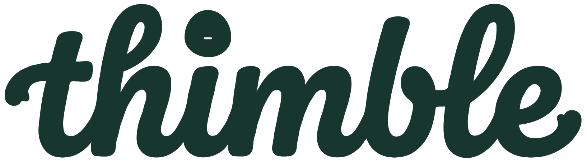

Colors
Mend Pink
#F3829A
Primary. Logo, fills, icons. Never body text on light bg.
Evergreen
#17372E
Ink. Text, dark backgrounds, primary buttons.
Honey
#E9B949
Accent. Highlights, "resolved" states. Fills only, never text.
Oat
#F6F1E7
Surface. Page background.
Typography
Wordmark & headlines — weight 800, tight tracking
UI & body — weight 500–700
Mend helps teams resolve disagreements with structure instead of guesswork — weight 500 for body copy, 600–700 for labels and emphasis.
Type scale
Wordmark spacing rule
"mend", all lowercase, ExtraBold 800, letter-spacing -0.05em. Mark sits to the left, vertically centered, gap ≈ 1/6 of the mark's width.
Logo
Two overlapping circles forming a lowercase "m", with a knot where the two sides meet.
Pink on Oat
Pink on Evergreen
Evergreen on Pink
Logo
The product name in a hand-lettered script, set in one solid color. The dot of the "i" is Thimble itself: the mascot's resting dome shape with its Oat pill mouth, filled in the same color as the letters. Use it in place of the Mend mark plus a typed "thimble" wherever the Thimble product is the brand on screen.

Evergreen on Oat
Evergreen on white
Usage
logo/thimble-wordmark-evergreen.svg (transparent background, tightly cropped).Mascot
The AI facilitator's on-screen presence: a soft dome, not a face or a character. Its color is a bloom of four state colors that are always present together; each state only shifts their weights so its own color leads. A faint shadow pools on the floor beneath it, so it reads as sitting on the surface.
Idle / Ready
Fixed soft-dome shape, slow 2.6s bounce. Blue leads the bloom.
Listening
Dome to circle wobble, continuous nod, fast attack to mic level. Mint leads.
Thinking
Slower wobble, head-tilt wiggle, off-center mouth, three orbiting dots. Honey leads.
Talking
Faster wobble and breathe, mouth height driven by voice amplitude. Pink leads.
Paused
Frozen: no breathing, no wobble. The bloom settles to an even four-way blend.
State colors
#A3CFE0#B0DED1#E9B949#F3829ABuild notes
50% 50% 48% 52% / 58% 58% 42% 42%. Active states wobble between that dome and a circle; never a hexagon or a polygon ripple.Design elements
Corner radius
Rounded-frame mode: cards and dialogs go even softer (lg × 1.15); buttons, tags, inputs go full pill.
Elevation — soft, ink-tinted
Shadows tint from the darkest neutral, never pure black.
Design elements
Buttons & headings use Manrope 800. Pink fill always pairs with Evergreen text, never Oat (fails contrast).
Voice
No aphorism headlines or clever reversals ("X is the symptom, Y is the cause", "it didn't X, it Y'd"). State what the thing does, plainly.